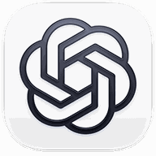

Four panes sit beside your shell.
Choose one to look closer.
See files change in the project tree.
Know what to commit and what to push.
See recent commits and what’s left to push.
Open a commit to see its files.
See your Codex and Claude Code usage.
Check when each limit resets.
See what was added or removed.
Read a file as it was at a commit.
Keep using your coding agent in the shell.
See what changes in the panes beside it.


5hin 2 h 38 m
weekresets in 2 d
5hin 1 h 58 m
weekresets in 2 d
186k tokens today
You
Agent
I’ll add wind speed in km/h and check the forecast output.
┌ Edit src/weather.ts
┌ Run bun test tests/weather.test.ts
└ ✓ 1 passed · 0 failed
┌ Commit src/weather.ts
└
milo
See your changed files, recent commits, and coding tool limits beside your shell in Rex.
git clone https://github.com/mcc0x/milo.git && cd milo && sh install.sh
The GitHub repository and docs are private for now.